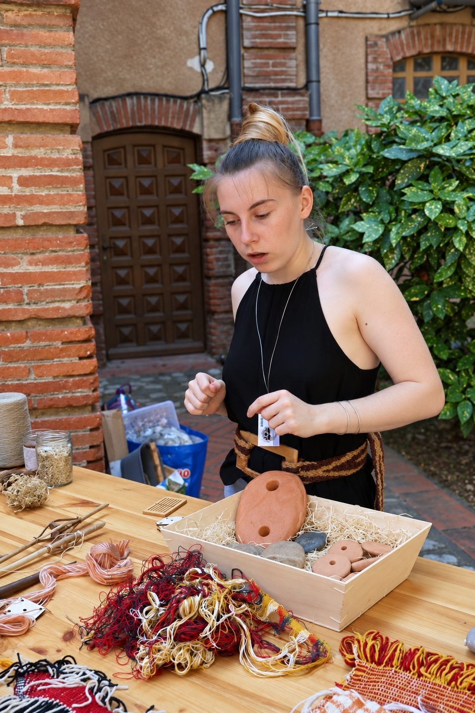

Calendrier des ateliers
Le calendrier des ateliers de l’association Néotisse rassemble les prochains rendez-vous autour des savoir-faire textiles anciens : ateliers, tissages, activités pour enfants et festival.
| Lun | Mar | Mer | Jeu | Ven | Sam | Dim |
|---|---|---|---|---|---|---|
| 1 | ||||||
| 2 | 3 | 4 | 5 | 6 | 7 | 8 |
| 9 | 10 | 11 | 12 | 13 | 14 | 15 |
| 16 | 17 | 18 | 19 | 20 | 21 | 22 |
| 23 | 24 | 25 | 26 | 27 | 28 | 29 |
| 30 |
Légende
- Festival d’archéologie expérimentale
- Ateliers explicatifs, démonstratifs, participatifs
- Tissages
- Atelier enfant
Actualités
Retrouvez les prochains rendez-vous de l’association Néotisse : festivals, ateliers et actualités autour des savoir-faire textiles anciens. Survolez une ligne pour en savoir plus.
01
Festival d’Archéologie Expérimentale d’Occitanie
9 et 10 octobre 2027, avec le musée de l’Aurignacien. Démonstrations, expérimentations et échanges.
Les 9 et 10 octobre 2027, l’association Néotisse et le musée de l’Aurignacien s’associent pour vous faire découvrir la richesse de l’archéologie expérimentale à l’occasion du tout premier Festival d’Archéologie Expérimentale d’Occitanie.
Pendant deux jours, venez à la rencontre d’étudiants, de chercheurs et d’artisans passionnés qui vous feront découvrir cette discipline essentielle à la compréhension des sociétés du passé. Démonstrations, expérimentations et échanges vous permettront d’explorer les techniques et les savoir-faire anciens, de comprendre les gestes de nos ancêtres et de découvrir comment l’expérimentation contribue à faire avancer la recherche archéologique.
Un rendez-vous inédit pour petits et grands, curieux, passionnés d’histoire ou simples visiteurs, qui souhaitent découvrir l’archéologie autrement, au plus près des gestes, des matières et des expériences.
Rendez-vous les 9 et 10 octobre 2027 pour faire revivre les savoir-faire du passé et expérimenter l’archéologie autrement !

02
Envie de participer ?
Organisez un atelier ou renseignez-vous sur nos prochains rendez-vous.
Écrivez-nous pour organiser un atelier ou en savoir plus sur nos prochains rendez-vous.
Organiser un atelier près de chez vous
Vous représentez un musée, un site archéologique, une collectivité ou une structure culturelle ? Chaque intervention est adaptée à votre public, à la durée souhaitée et à vos contraintes. Découvrez nos ateliers, faites connaissance avec l’équipe Néotisse, puis écrivez-nous depuis la page Contact : nous ajouterons votre évènement au calendrier des ateliers dès qu’il sera confirmé.